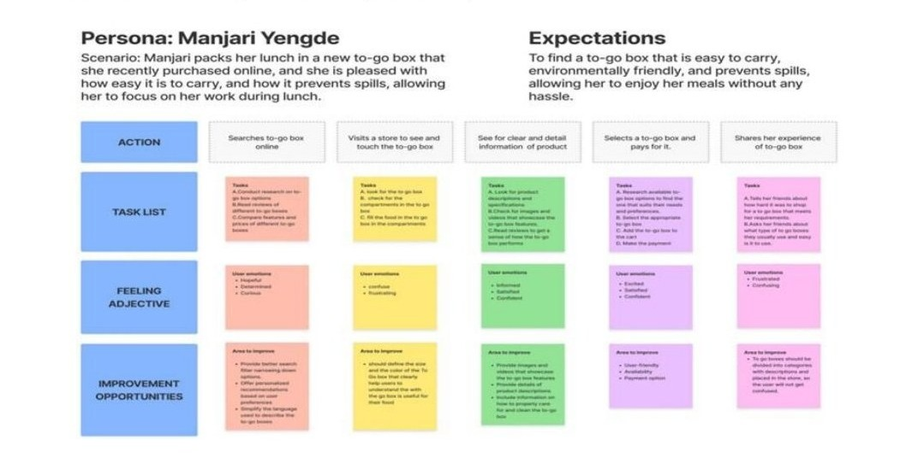
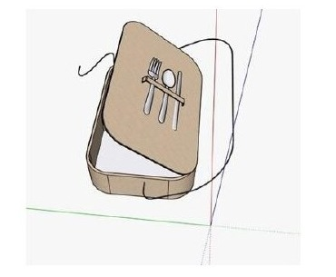
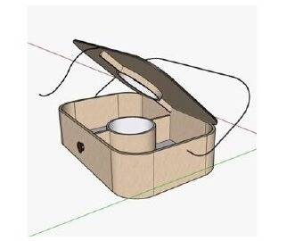
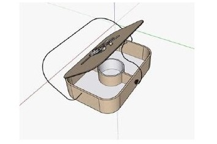
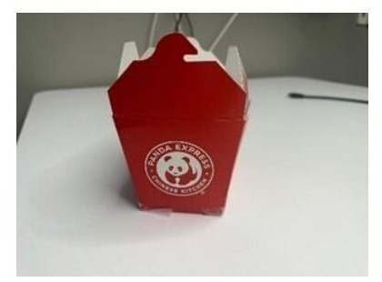
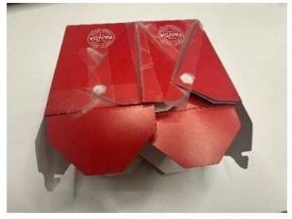
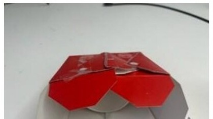

Turning the most overlooked object in takeout culture into a user-centered, eco-friendly experience, through research, personas, journey mapping, and physical prototyping.
The Problem
No handle to carry · liquid items require separate containers · cutlery must be carried separately · non-microwaveable materials · non-eco-friendly construction · chronic leakage and spillage. Every single day, millions of people wrestle with all six.
Key Persona
After thorough surveys and interviews, one persona emerged as our design anchor, capturing the core frustrations shared by the majority of our users.
"I just want a box that's easy to carry and won't spill my food everywhere. Is that too much to ask?"
User Journey Map
We traced Manjari's complete journey: Search online → Visit store → See product details → Select & pay → Share experience. Each touchpoint revealed emotional lows that drove our redesign, especially the moment of carrying and opening the box.

User journey map — Persona: Manjari Yengde, from search to shared experience
The Process
Digital Design — SketchUp 3D Model

Closed lid, integrated cutlery icon

Open view — 3 compartments + liquid cup

Angled view of the open compartment layout
Physical Prototype

Closed prototype, front view

Open prototype, top view

Open prototype, angled view
Outcome
"A sustainable, user-tested redesign that addressed all 6 pain points, from chronic leakage to eco-impact, through rigorous research and iterative physical prototyping."
HSE521. Methods & Tools of Human System Engineering · Dr. Jaimie McNabb, ASU
A+ 97.25%